Five directions for the WB.
Compare the live mark with changes to the crossover reach and diagonal alignment. Each option is built from explicit coordinates; the gold/teal view separates the W from the B.

00 / Current / live
Approved crossover. Reference for the five explorations.

01 / Steep parallels
Keep the inner-spine crossover. Match the W rise and both B clefts at 70.4°.


02 / 60° rhythm
Open the upward diagonals to 60°. Pair the B’s chevrons at ±60° and keep the W downstrokes parallel at 75°.



03 / Outer reach
Extend the W’s final arm to the B’s far-right point. Keep the inherited B as a control for the reach change.



04 / Outer reach / 3:2 grid
Extend the W to the outside and align the rising edges on a 2-right / 3-up grid: 56.3°. B folds use a second repeated ratio.



05 / 45° lattice
A wider experiment: the W reaches the outer bowl on a 45° diagonal; all B chamfers use the same 45° grid.